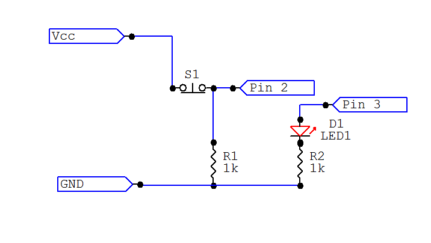
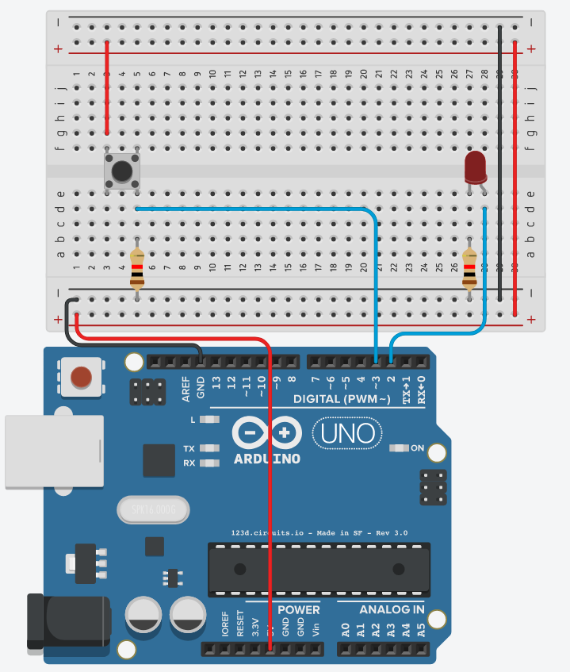

Light & Variables
Description:
When the arduino detects a signal from pin 1, the LED will turn on. When the arduino detects a signal from pin 2, the LED will turn off.
Important Notes:
- All pins used in this project are digital
- You may use a bigger breadboard like the one below
- Battleship instructions refer to to coordinate system on the breadboard. For example, 5E (or E5) would be this hole in the breadboard:
Materials:
- 1x Breadboard
- 7x Male to male jumper wires
- 1x Buttons or switches
- 1x LED
- 2x 1k ohm resistor (brown, black, red)
- 1x Arduino uno
Instructions:
- Orient the breadboard so that the smallest column number is on the left, and the greatest is on the right.
- Connect the two positive power rails together and the two negative power rails together. This should be done at the very end (edge) of the breadboard.
- Connect the switch to the bridge of the breadboard (F3-F5 : E3-E5)
- Connect one side of the switch to positive (G3 to Vcc) and a 1k resistor to negative (B5-Ground). Connect them in a diagonal pattern.
- Take the arduino and connect the switch from the Vcc side (D5-Dig3) to Dig3 on the digital side (right side) of the arudino.
- Connect the LED to the board (E28 positive side of LED, E27 negative side of LED) and connect the 1k resistor to the negative side of the LED (B27-Ground).
- With a wire, Connect the positive end of the LED to Dig2 on the arduino (D28-Dig2).
- Connect a wire from Vcc and connect it to the 5V on the analog side of the arduino (left side).
- Connect the ground side of the breadboard to the digital ground side of the arduino (right side).
Schematic/Breadboard diagram:
 Demonstration:
Related: Variables Software Tutorial Next Tutorial